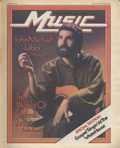

John Michael Talbot
|  October 1979 Contemporary Christian Music |
 December 1982 Contemporary Christian Music |
Media coverage:
- Nov 1974 in Right On! "A Joyful Noise: John Michael Talbot, Terry Talbot, Mason Proffit", by Paul Baker
- Oct 1979 in Contemporary Christian Music "The Confessions of John Michael Talbot", by Ron Velten
- Nov 1979 in Campus Life "Spotlight: John Michael Talbot"
- Jul 1980 in Christian Herald "Staying Sensitive To God", by Ron R. Lee
- Oct 1980 in Contemporary Christian Music "Records: An Update With John Michael Talbot", by Steve Rabey
- Mar 1981 in The Saturday Evening Post "Rock of Ages", by Paul Baker
- Jul 1981 in Christian Herald "Gospel Music Branches Out", by Corinne Ipavich
- Dec 1982 in Contemporary Christian Music "Trubador of a Gentle Revolution", by Paul Baker
- Dec 1982 in Campus Life "Impressions: John Michael Talbot", by Rickley Christian
- Feb 1983 in Christian Herald "The Radical Faith of John Michael Talbot", by Ron R. Lee
- Jul 1983 in Contemporary Christian Magazine "John Michael Talbot"
- Feb 1984 in Christian Life "Gentle Revolutionary", by Dan O'Neill
- Nov 1984 in Contemporary Christian Magazine "Book of Days", by John Michael Talbot
- Jan 1985 in Campus Life "In Their Own Words: John Michael Talbot"
- Feb 1985 in Christian Life "Tunes for the Times", by Patrick Kampert
- Jun 1986 in The Other Side "Media Focus: Troubadour for the Lord?", by William O'Brian
- 18 Mar 1987 in Christian Century "From Songs of Protest to Hymns of Praise", by L. Katherine Cook
- Sum 1987 in Harvest Rock Syndicate "More Music For The New Frontier", by T. L. Faris
- Jan 1993 in CCM "Christian Musician: Ministry For The Master Musician"
- Jul 1996 in CCM "Brother Hood", by Steve Rabey
- 3 Feb 1997 in Christianity Today "News: North American Scene: Church Tunes Out Ecumenical Duet"
- 22 Oct 2001 in Christianity Today "Christianity Today Review: A Troubadour and His Guitar", by Douglas L. Leblanc
- Aug 2007 in Charisma & Christian Life "The Jesus People: Where Are They Now"
- Jun 2011 in Christianity Today "Two Minutes With...: John Michael Talbot"
- Oct 2013 in CCM Digital "Worship: The Jesus Prayer"
Albums & reviews:
1976: John Michael Talbot
- Jul 1976 in Radix, by Paul Baker
- Dec 1976 in Group, by Christian Wolfe
- Jan 1977 in Campus Life, by Steve Lawhead
- Feb 1977 in Electronics Australia, by Neville Williams
1977: The New Earth
- May 1977 in Campus Life, by Steve Lawhead
- Nov 1978 in Eternity, by Dr. Richard J. Stainslaw
1979: The Lord's Supper
- Jun 1979 in Campus Life, by Steve Lawhead
- Jul 1979 in Charisma, by Margret French
- Aug 1979 in Christian Life, by Janice Gosnell Franzen
- Sep 1979 in Logos Journal, by Doug Holck
- Mar 1980 in Eternity, by Dr. Richard J. Stainslaw
- May 1980 in Electronics Australia, by Neville Williams
1980: Come to the Quiet
- Mar 1980 in Contemporary Christian Music
- May 1980 in Charisma
- May 1980 in Logos Journal, by Cathe Warford
- Jun 1980 in Group, by Michael Adler
- Jul 1980 in Christian Herald, by Ron R. Lee
- Nov 1980 in Charisma
1981: For the Bride
- Mar 1981 in Contemporary Christian Music
- Jun 1981 in Campus Life, by Gord Wilson
- Jul 1981 in Charisma
- Jul 1981 in Christian Herald, by Ron R. Lee
1981: Troubadour of the Great King
- Feb 1982 in Contemporary Christian Music, by Paul Baker
- May 1982 in Charisma, by Bob Darden
- May 1982 in Eternity, by Dr. Richard J. Stainslaw
- Jun 1982 in Christian Herald, by Ron R. Lee
- Jul 1982 in Campus Life, by Nathan Young, Jim Long
- Mar 1983 in Eternity, by Dr. Richard J. Stainslaw
- Jul 1983 in The Other Side, by Mark Olson
1982: Light Eternal
- Oct 1982 in Contemporary Christian Music, by Thom Granger
- Jan 1983 in Christian Herald, by Ron R. Lee
- 5 Jan 1983 in The Lutheran, by Steve Rabey
1982: Songs For Worship Vol. 1
- Apr 1983 in Contemporary Christian Music
- May 1983 in Campus Life, by Jim Long
- Jul 1983 in Christian Life, by Becca Miller Anderson
- Aug 1983 in The Lutheran, by Steve Rabey
- Sep 1983 in Christian Herald, by Ron R. Lee
1984: The God of Life
- Aug 1984 in Contemporary Christian Magazine, by Patrick Russ
- Oct 1984 in Christian Life, by Peter Crescent
- Jan 1985 in Christian Herald, by Peter Gross
1985: Songs For Worship Vol. 2
- Dec 1985 in Contemporary Christian Magazine, by Bob Darden
- Feb 1986 in MusicLine, by Bruce A. Brown
1985: The Quiet
- 1985 in Cornerstone, by Jon Trott
- Jan 1986 in Contemporary Christian Magazine, by Bruce A. Brown
- Feb 1986 in Charisma, by Monica Riodan
- Feb 1986 in Christian Herald, by Peter Gross
1986: Empty Canvas
- Feb 1987 in CCM, by Bruce A. Brown
- Mar 1987 in Christian Herald, by Peter Gross
- Apr 1987 in Christian Life, by Annie Wamberg
1987: Heart of the Shepherd
- May 1987 in Campus Life, by Jim Long
- Jun 1987 in CCM, by Steve Rabey
- Jun 1987 in Christian Herald, by Peter Gross
1987: Quiet Reflections
- Feb 1988 in Charisma & Christian Life, by Steve Lawson
- Mar 1988 in Christian Herald, by Peter Gross
- Apr 1988 in CCM, by Bruce A. Brown
- Mar 1990 in CCM, by Kathleen A Ervin
1988: The Regathering
- Apr 1988 in CCM, by Bruce A. Brown
- 1988 in Premiere
- Jul 1988 in Campus Life, by Jim Long
- 1988 in Cornerstone
1989: The Lover and the Beloved
- Apr 1989 in CCM, by Warren Anderson
- Nov 1989 in The Other Side, by Kathleen Hayes
1990: The Quiet Side
- Mar 1990 in CCM, by Kathleen A Ervin
- Sum 1990 in YouthWorker, by Steve Rabey
- Jul 1990 in The Other Side
1990: The Birth of Jesus: A Celebration of Christmas
- Nov 1990 in Today's Christian Woman, by Rebecca K Grosenbach
- Nov 1990 in CCM, by Kathleen A Ervin
- Nov 1990 in Christian Herald, by Peter Gross
- Dec 1990 in Religious Broadcasting, by Darlene A Peterson
- Dec 1990 in Campus Life
1990: Come Worship the Lord - Vol I
1990: Come Worship the Lord - Vol II
1993: Meditations in the Spirit
1994: Meditations from Solitude
1995: Chant from the Hermitage
1996: Brother to Brother with Michael Card
- Jun 1996 in CCM, by Scott Thunder
- Jul 1996 in Today's Christian Woman
- Aug 1996 in Aspire, by Phil Newman
- Sep 1996 in Christian Single, by Mark A Smeby
1996: Our Blessing Cup
1998: Quiet Pathways
1998: Spirit Pathways
1998: Pathways to Wisdom
1998: Pathways of the Shepherd
1999: Cave of the Heart
- Sep 1999 in CBA Marketplace, by Steve Parolini
- Nov 1999 in YouthWorker, by Dave Urbanski
2000: Simple Heart
2005: City of God
2005: Monk Rock
2006: The Beautiful City
Award Summary (Nominations / Wins)
Dove Awards- 1981 Dove Awards
- Praise & Worship Album: Come to the Quiet
- Praise & Worship Album: For the Bride
- Praise & Worship Album: Light Eternal
- Male Vocalist
- Artist
- Recorded Music Packaging: Songs For Worship Vol. 1
- Praise & Worship Album: Be Exalted
- Inspirational Album: The Birth of Jesus: A Celebration of Christmas
Published articles:
Books about John Michael Talbot
- "John Michael Talbot" in The Encyclopedia of Contemporary Christian Music (Mark Allan Powell, 2002).
- "John Michael Talbot" in The Billboard Guide to Contemporary Christian Music (Barry Alfonso, 2002).
© 2011 CMnexus. Last updated May 2025. Contact: editor -AT- cmnexus -DØT- org